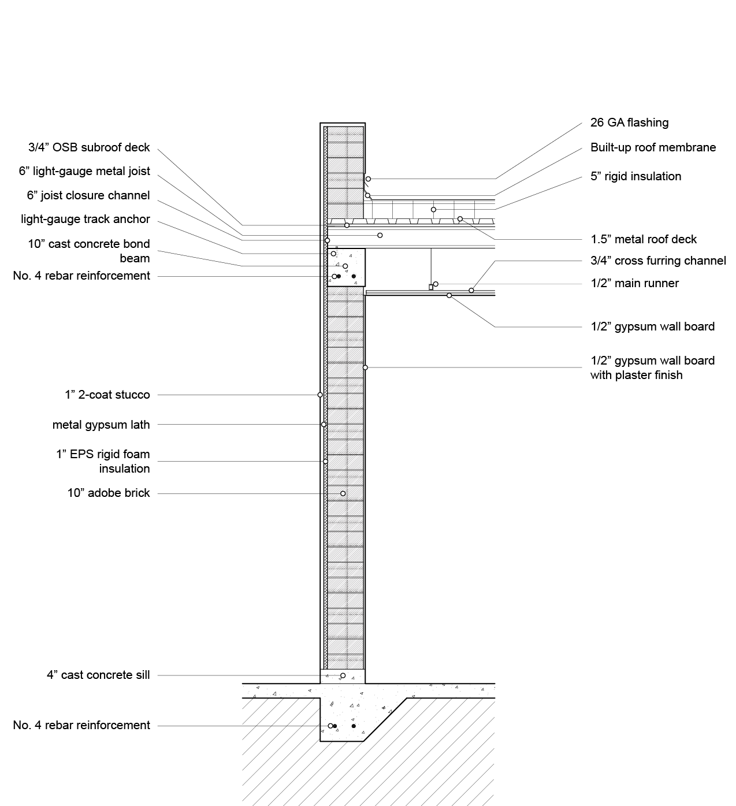
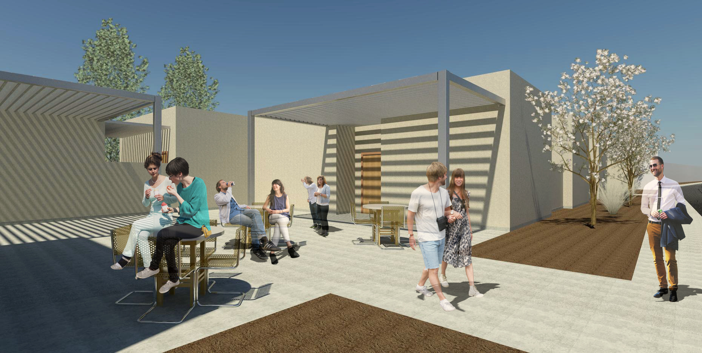

Amid the brush and mountains of the Sonora desert lies the city of Imuris, home to the Casa Elizabeth Orphanage and over 40 children. The children, many of whom have parents who work in the United States, range between the ages of 3-16. Even by local standards the facilities of the orphanage are dilapidated and generally unequipped to provide the children with the level of education and care required.
Proyecto Compasion, a charitable organization based out of Tuscon, Arizona, seeks to strengthen the developmental infrastructure for the orphaned youth population of Imuris by improving the orphanage’s existing facilities and engaging the nearby communities of Imuris and Magdalena. As part of this initiative, the Tierra Alegra Transitional Home will serve as an intermediary home for young women leaving the care of the orphanage.
Site Plan
Located in the nearby city of Magdalena, the home will house up to 6 young women and serve as a base of operations for the Tierra Alegra project. In addition, the Tierra Alegra Transitional Home will share its site with a retail market where the produce from Casa Elizabeth’s farm will be sold. Together, the transitional home and market aim to provide young adults with a safe transition into adulthood and a node for community engagement.
The design of the Tierra Alegra Transitional Home acknowledges its historical and geographical context by utilizing building models and construction practices native to Sonora, Mexico. The primary building material, adobe, is a traditional mud brick that has been used for centuries and which remains a functional and economic material in the region. The relative simplicity of adobe brick manufacturing and adobe construction provides the opportunity for greater community involvement during the construction process, wherein volunteers with varying degrees of construction skills will be able to aid in building.
Floor Plan
Important goals in the design of the transitional home are to achieve a balance between communal and private living space and to enmesh elements of the outdoors to the interior. Accessible pocket courtyards are shared between dormitories, insuring that each resident has ample access to light and vegetation while preserving privacy.
A large central courtyard acts as a centralizing element, allowing light into the heart of the building and providing a communal outdoor condition separated from the larger urban fabric. To mitigate the relentless heat of the Sonoran desert while offering access to the outdoors, numerous shaded areas are provided.
Streetside Elevation
Transverse Section through Rooms
Transverse Section through Courtyard
Longitudinal Section
Wall Section
